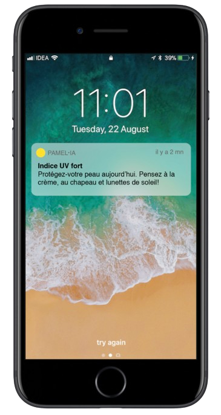
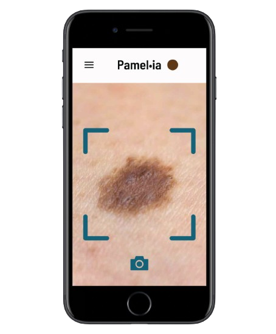
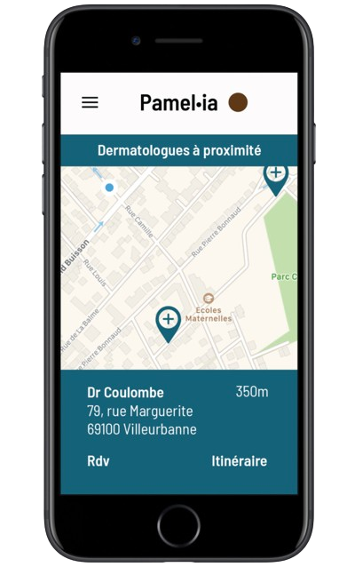

Florian Robinet
Data Scientist
PamelIA
Description
PamelIA est un projet de recherche qui explore les possibilités de l'intelligence artificielle dans le domaine médical.
Ce projet a pris naissance lors d'un premier hackathon proposé par le laboratoire Pierre Fabre. Pendant cet événement, l'objectif était de concevoir un outil d'analyse d'image permettant de prédire, à l'aide d'une photo, s'il s'agissait d'un grain de beauté bénin ou d'un mélanome. Pour ce faire, nous avons utilisé une base de données mondiale de photos de grains de beauté, accompagnée de l'évaluation d'un dermatologue pour déterminer s'il s'agissait d'un mélanome. Ensuite, nous avons créé un module d'apprentissage profond en utilisant le langage de programmation Python avec la bibliothèque Keras, dans le but de prédire la réponse.
Dans un deuxième hackathon ultérieur, nous avons décidé de créer une API permettant d'interroger ce code et de l'intégrer dans une application mobile de suivi de la santé de la peau. L'objectif de l'application était de fournir de nombreuses fonctionnalités répondant aux besoins médicaux et esthétiques des utilisateurs.
Ce projet réunit des individus de diverses origines culturelles, tels que des chercheurs, des data scientists et des développeurs.
Fonctionnalités de l'application mobile

Un chatbot intelligent pour obtenir des conseils sur votre peau
Ce chatbot vous fournira des conseils précieux pour protéger votre peau au quotidien. Ce chatbot est construit avec un algorithme d'intelligence artificielle afin de se concentrer sur la texture de votre peau, le climat de votre région et votre mode de vie. L'objectif est de fournir un outil éducatif pour prévenir les maladies de la peau.

Détection du mélanome
L'une des fonctionnalités de l'application est de détecter si un grain de beauté est un mélanome. Il vous suffit de prendre une photo avec l'application, et elle l'analysera. L'analyse est réalisée avec une nouvelle technologie issue du domaine de l'intelligence artificielle : le réseau de neurones à convolution. L'algorithme est très efficace, avec une précision moyenne supérieure à 90 %. Cette technologie permet à tout le monde de bénéficier des meilleurs algorithmes d'IA afin de protéger leur peau.

Trouvez le meilleur soutien médical près de chez vous
Cette fonctionnalité vous donne accès à toutes les informations sur les médecins autour de vous pour trouver le meilleur soutien médical. Vous pourrez trouver tous les spécialistes de la peau et organiser facilement un rendez-vous.
En savoir plus ...